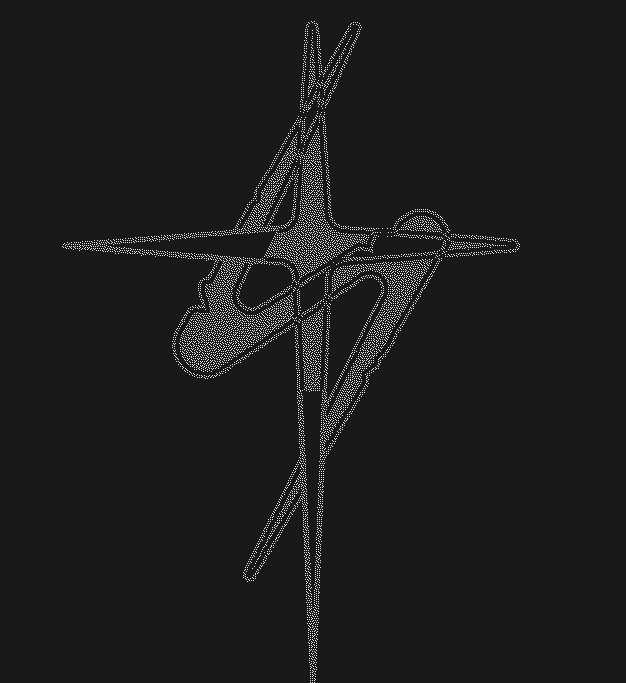
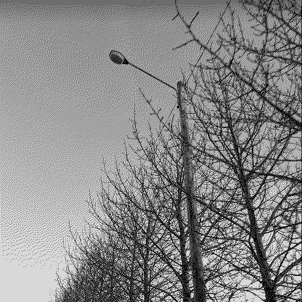

New mix for Radio Quântica
230403
Last Friday, I made a mix for Subtempo on Radio Quântica. The show is run by my friend Moss Kissing, whom I met in Iceland last year when he played a show at Mengi through our mutual friend Bart, who also had a mix on the same show. We have been internet pals since and have been meaning to plan something together. Therefore, us playing in Lisbon next week at Damas and Cosmos is very exciting, but Moss and Bart planned the whole thing.
I have been working relentlessly on live sets for the whole event, which I am excited to play. I will also play the same set in Reykjavík on the 14th of April at Húrra for those interested. The lineup will consist of myself, In3dee, and russian.girls.
I made the entire mix after getting very sick, so my focus was all over the place at the time. Sadly, I don't remember making a tracklist or anything. But for those interested in individual tracks, feel free to contact me. The mix includes songs by my friends in Reykjavík: Sideproject, Ronja, Atli Finnsson, Pellegrina, Femme Terror, Russian.girls, and some others. It also features a lot of other stuff that I have been listening to lately and some unreleased tracks from myself.
